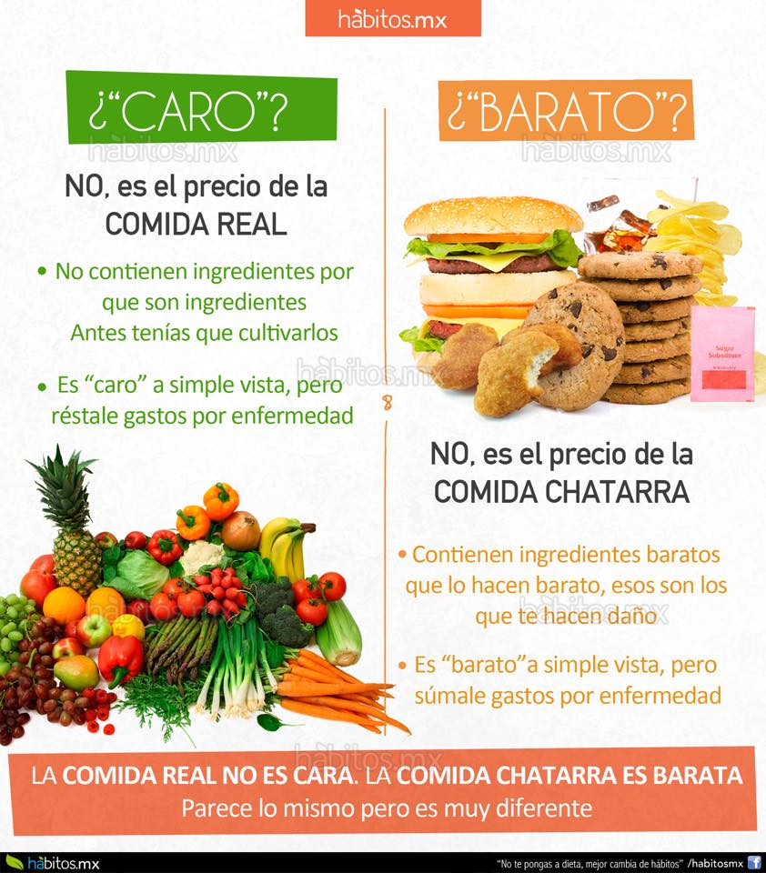

Vivimos en una sociedad estresada que pasa la mitad de su tiempo en algún tipo de transporte para llegar a su destino. Esto se traduce en que le quitamos horas de calidad a la cocina, por lo que terminamos comiendo cualquier cosa que hayamos tenido tiempo de preparar antes de salir o yendo a un bar a picar lo que tengan.
En otras ocasiones la excusa es que no se tienen nociones de cocina o que cocinar no es de mucho agrado. Pero lo cierto es que la cocina puede ser muy divertida a la vez que entretenida.
Al contrario de lo que muchos piensan, no es necesario tener una gran cantidad de habilidades culinarias para realizar recetas y platos deliciosos a la vez que sanos y nutritivos. Se dice que “somos lo que comemos”, por ese motivo es necesario dedicarle a la cocina algunas horas a la semana. Sin embargo, no es preciso cocinar todos los días para comer sano, solo es cuestión de organizarse para crear un menú que rinda durante varios días.
En Internet existen infinidad de páginas donde encontrar ayuda e ideas. En este recetario existe una gran variedad de recetas que van desde arroces, pasando por pastas, guisos, postres o pescados y marisco. Gracias a ello los usuarios pueden organizar un plan semanal de comidas y congelar los platos que hagan para que duren más tiempo.
Esto siempre será mucho mejor que alimentarse a base de productos precocinados, envasados o enlatados. Las ventajas no solo se miden en el ámbito de la salud, sino que también son monetarias. Salir a comer frecuentemente a la calle es más caro que cocinar en casa. Por eso la mejor opción es preparar comida casera con ayuda de blogs de cocina para encontrar variedad y no aburrirse de los mismos platos.
group
Comida de otra categoria.
Si bien tener sazón es el privilegio de unos cuantos, el comer bien es el deber de todos y mas cuando esta en nuestras manos el poder hacerlo. Por ello y porque estamos al alcance de muchos ingredientes faciles de conseguir, debe considerarse como hobbie el cocinar. Por ello hay que reconocer algunos chef colombianos que se hacen reconocer a nivel internacional:
Carlos Yanguas: Estudió cocina en Buenos Aires, en el Instituto Internacional de Artes Culinarias Mausi Sebess; después abrió en Cali el restaurante Passión, de gastronomía internacional; que poco a poco fue trasformando en sabores más locales y recetas ancestrales del Pacífico.
Jorge Rausch: Jorge Rausch Wolman nació en Bogotá en 1970. En la actualidad es una de las caras más reconocidas de la gastronomía colombiana. En su restaurante Criterión se pueden degustar platos de inspiración gastronómica francesa, además de una extensa bodega de vinos internacionales. Se formó en la Tante Marie Culinary Academy de Londres y trabajó en Le Manoir au Quattre Saisons en Oxford y en Sally Clarke en Londres. Con el Criterión ha sido reconocido en los premios La Barra como Mejor Restaurante y Mejor Chef en los años 2009 y 2010. Además del “Five Diamond Star Award” Junto a su hermano Mark, ha desarrollado otros conceptos gastronómicos
en Bogotá como el Rausch Patistier y el restaurante Bistronomy
Harry Sasson: Harry Sasson es un chef colombiano que ha conseguido crear una marca de su nombre, al tener bajo su nombre a cadenas de restaurantes y productos gastronómicos de calidad. Se formó en lugares como el Hotel Hilton de Bogotá y en Canadá. En 1995 abrió su primer establecimiento en la zona T de Bogotá, el “H.Sasson – Wok & Satay Bar”, en un ambiente cuidadosamente diseñado con exquisitos detalles en su decoración, un balcón, una terraza exterior y una hermosa y muy completa cava de licores en la que Harry tiene una sola mesa reservada para atender a diez clientes especiales que la reserven.